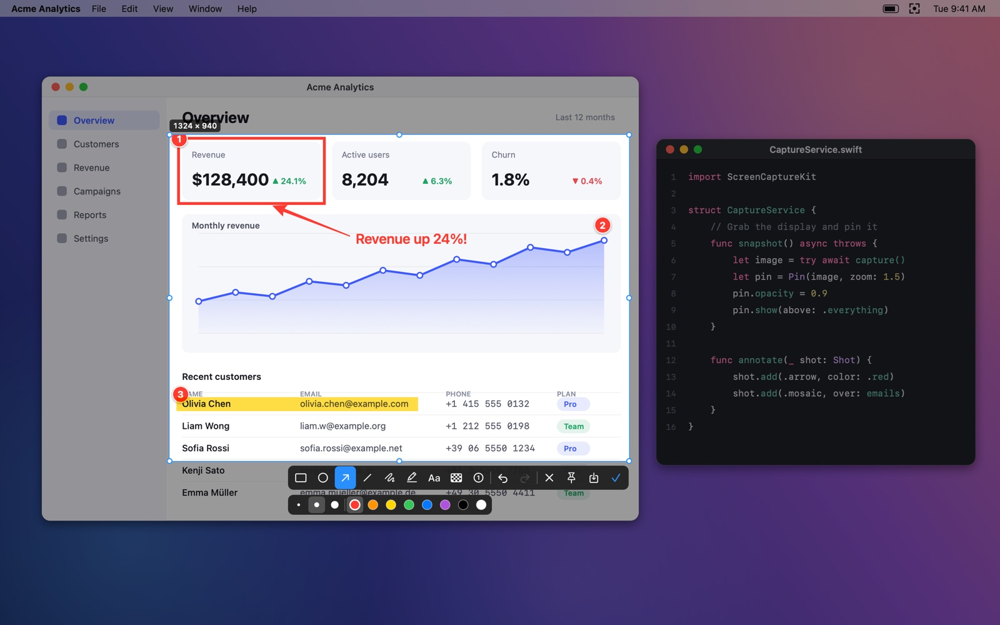
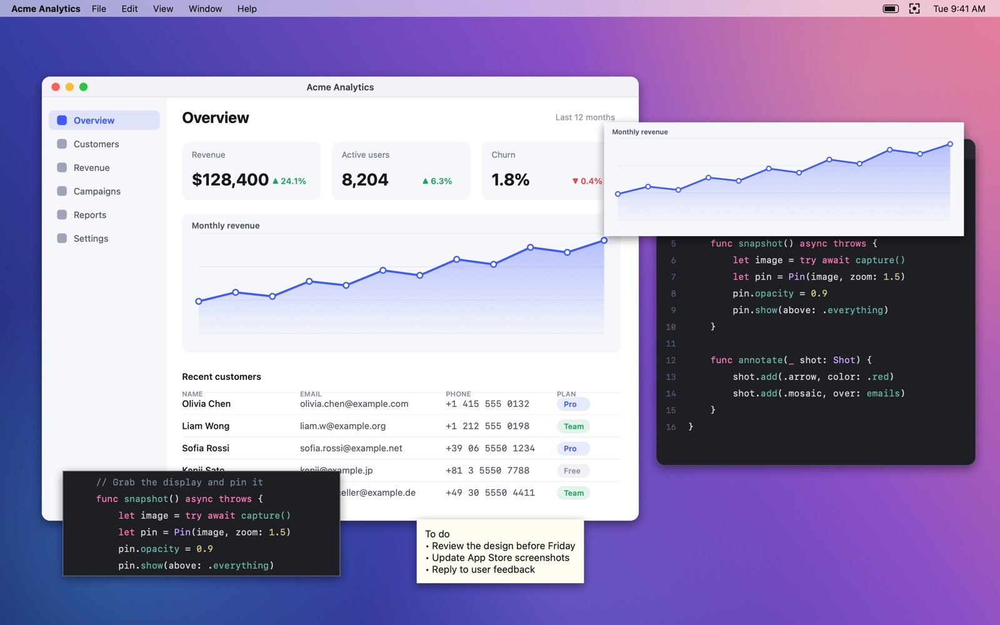
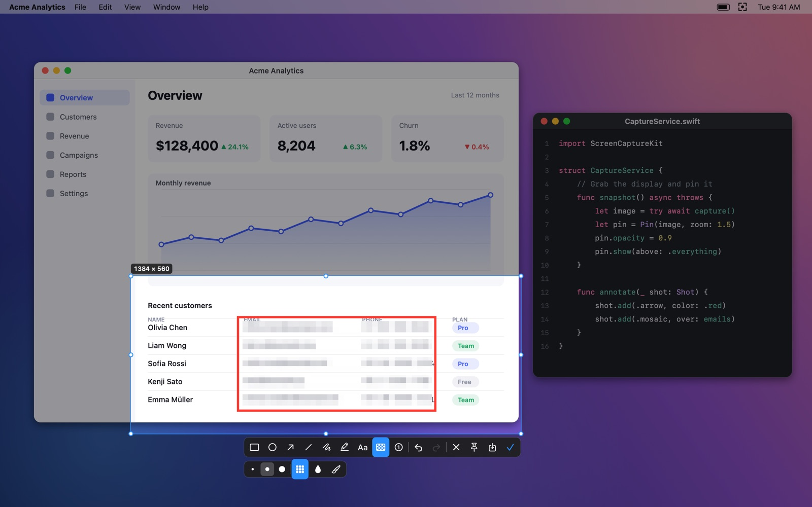

FreeShot
Screenshot, annotate and pin images on top of everything.
截图、标注，并把图片贴在所有窗口之上。

Smart capture · 智能截图
Press ⌥⌘A, hover to snap to a window or drag any area. Pixel magnifier and color picker included.
自动识别窗口，放大镜精确到像素，一键取色。
Annotate · 标注
Rectangles, ellipses, arrows, lines, pen, highlighter, text, mosaic/blur and numbered markers, with undo.
矩形、箭头、画笔、文字、马赛克、序号……
Pin to screen · 贴图
Keep any capture floating above all windows. Zoom, change opacity, rotate, or click through it.
贴图置顶，可缩放、调透明度、旋转、鼠标穿透。
Pin the clipboard · 剪贴板贴图
Press ⌥⌘P to pin the image or text you just copied.
把刚复制的图片或文字直接贴到屏幕上。
Private by design · 隐私优先
No account, no network, no analytics. Everything stays on your Mac.
无需账号、不联网、不统计，数据只在你的 Mac 上。
Native & light · 原生轻量
Built with Swift and ScreenCaptureKit. Lives quietly in the menu bar.
原生开发，常驻菜单栏，小巧流畅。

